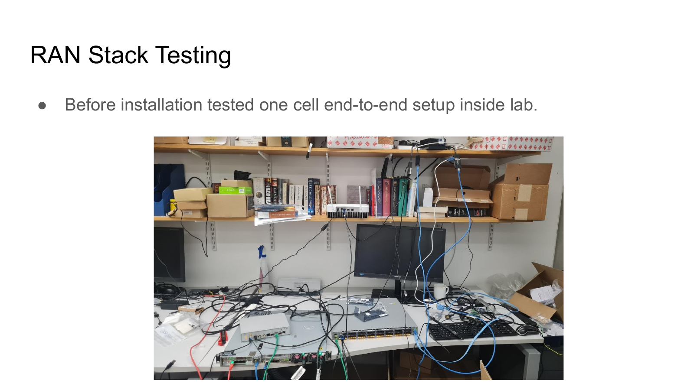
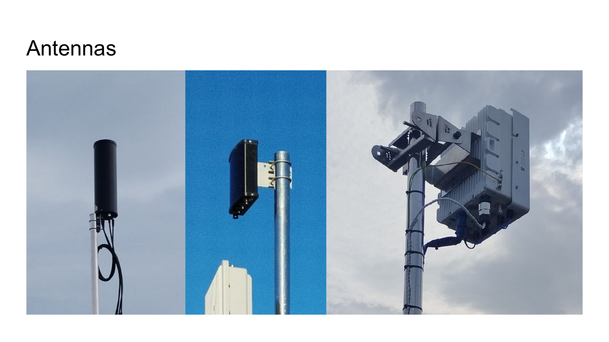
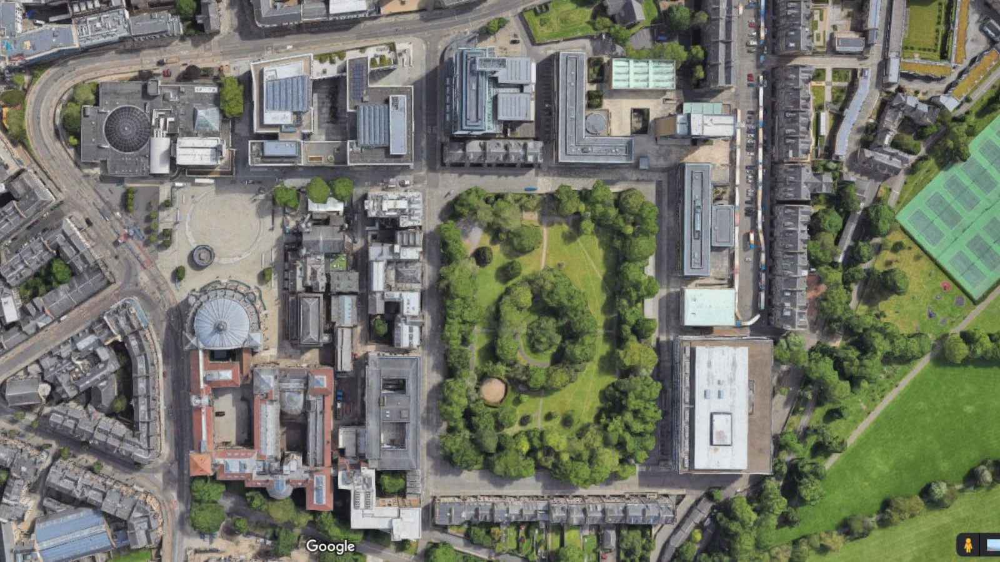
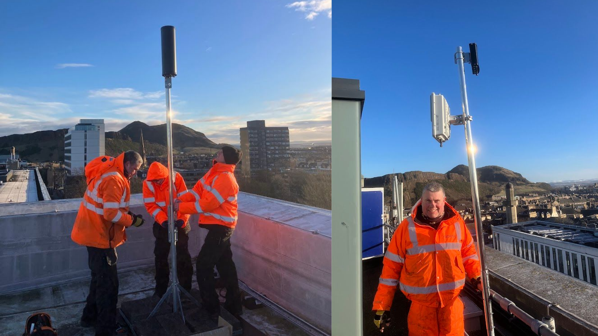
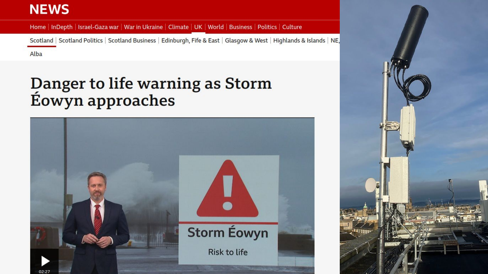
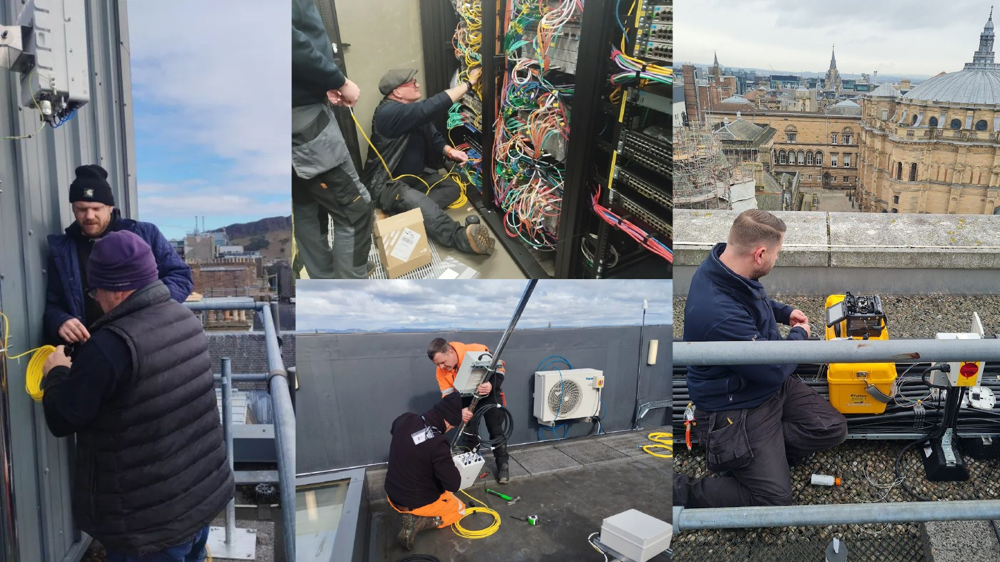
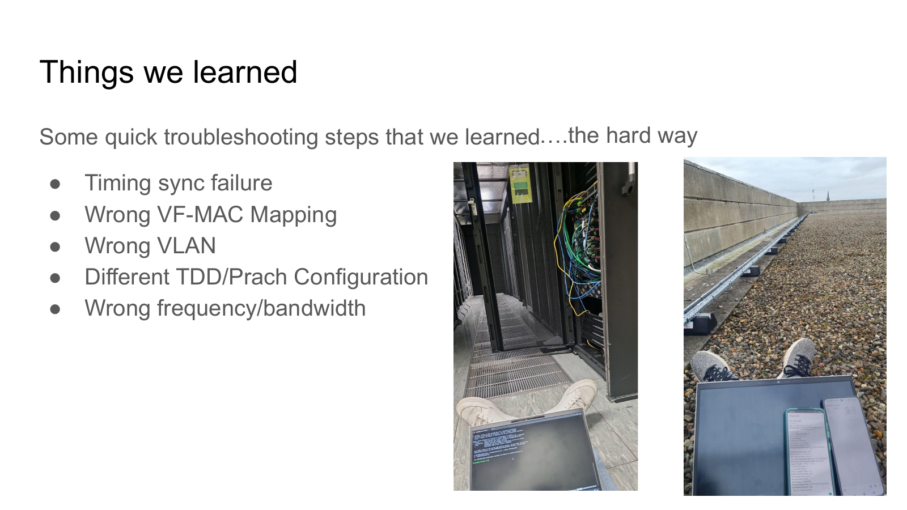
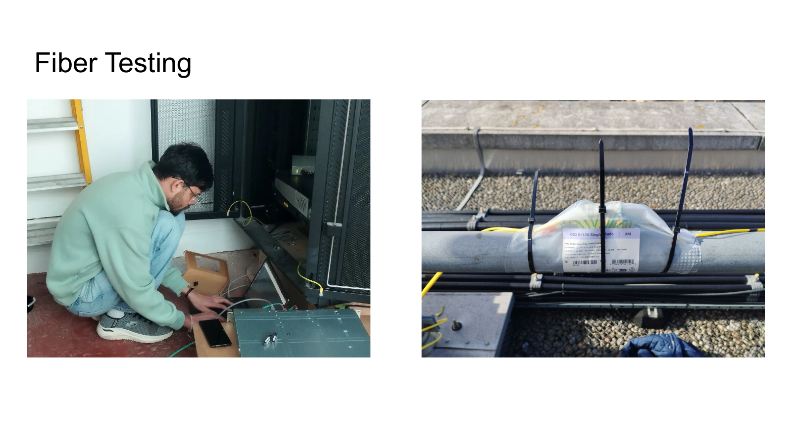
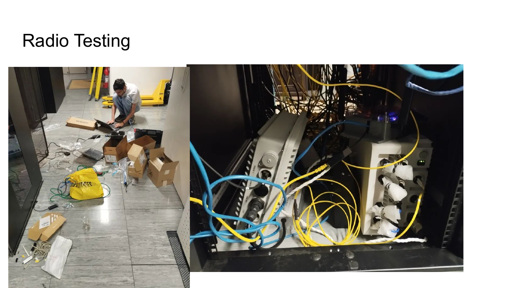
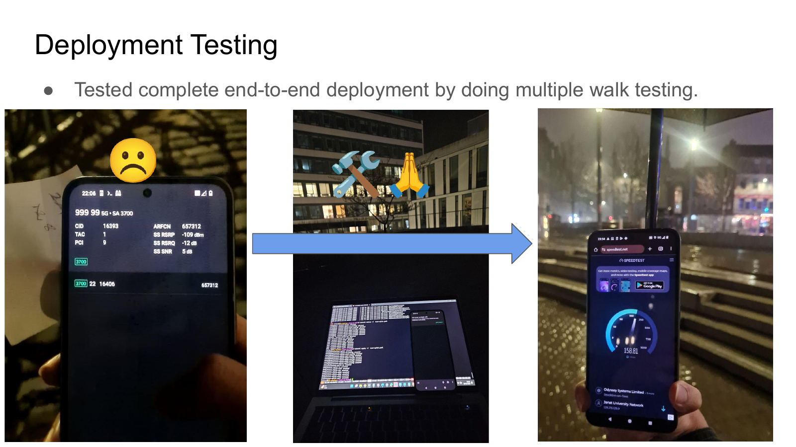

01
Testing one cell end-to-end
Before installation, the team tested a one-cell end-to-end setup inside the lab.

A visual timeline for the campus-scale O-RAN-compliant private 5G testbed at the University of Edinburgh.
Before installation, the team tested a one-cell end-to-end setup inside the lab.

We use Benetel and VVDN RUs with these antennas as part of the Campus5G deployment.

The testbed moved from a lab idea toward a campus-scale system with physical locations, paths, and coverage constraints.

Campus5G brought the RAN, core, timing, and management pieces into one experimental platform.

Campus5G survived Storm Éowyn, giving an early proof point for deployment resilience.

Fiber links were installed across the campus deployment to connect the radio sites back to the testbed infrastructure.

Timing sync failures, VLAN issues, VF-MAC mapping, TDD/PRACH settings, and frequency mismatches became concrete engineering lessons.

Fiber testing helped make the physical transport layer dependable before the full system came online.

Radio testing validated the RF-facing components before full end-to-end operation.

The complete deployment was tested end-to-end with multiple walk tests across the campus environment.
